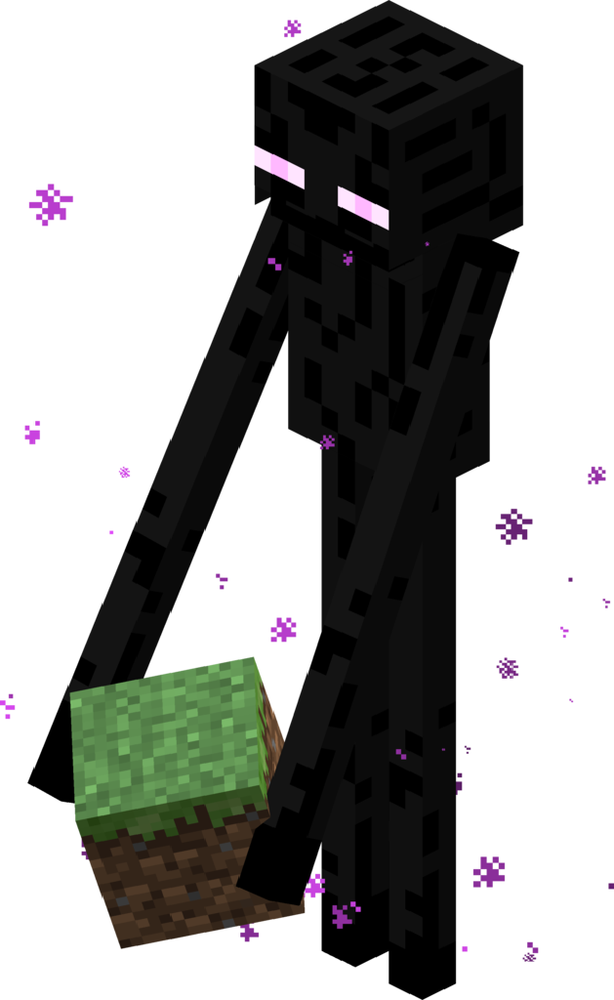
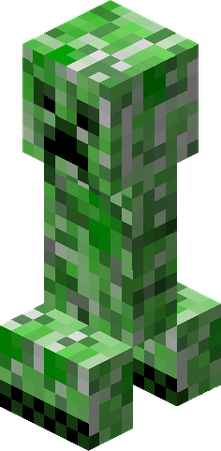
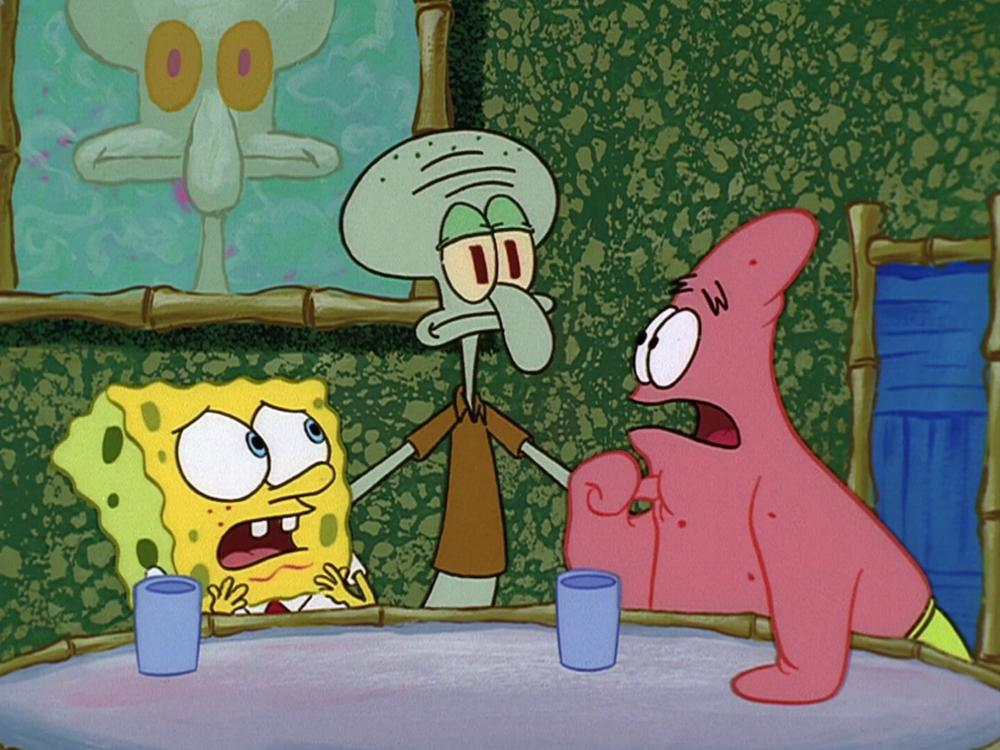
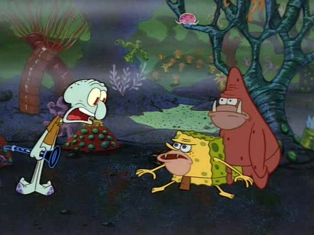
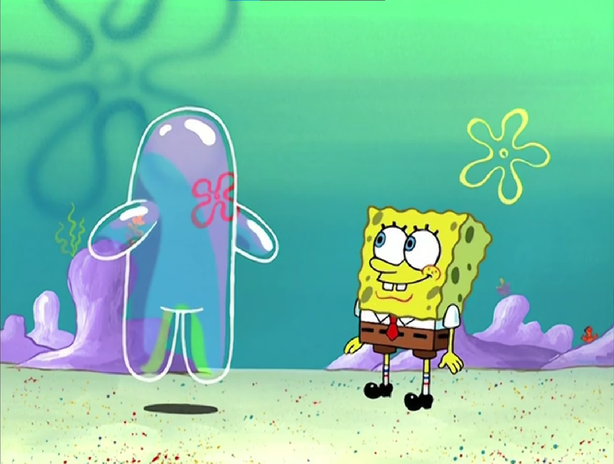
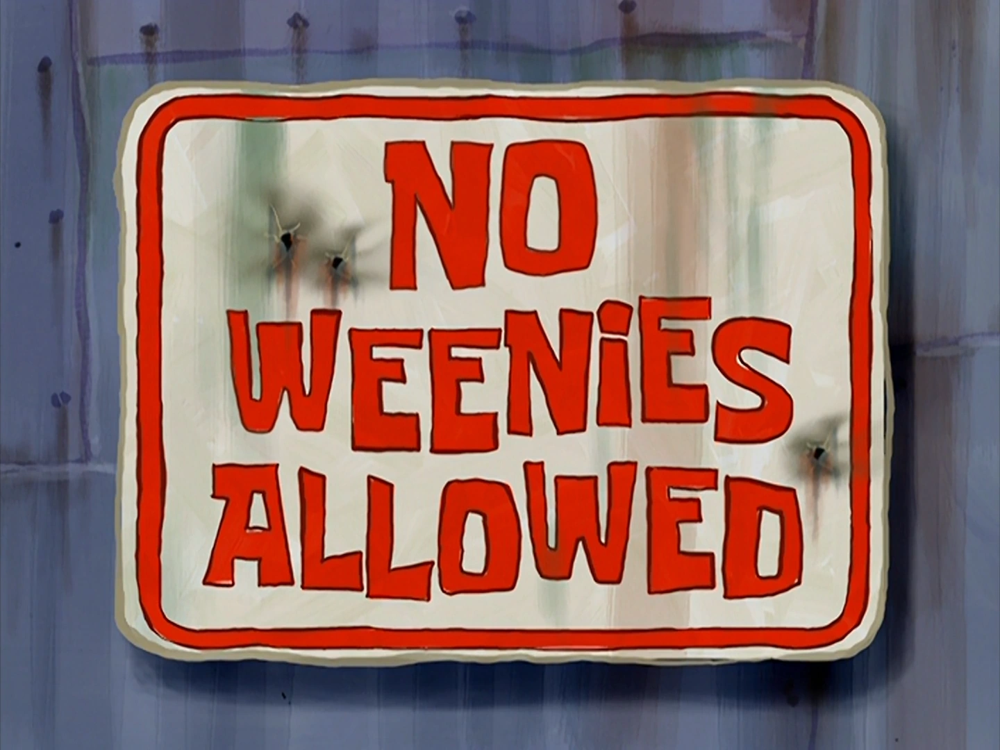

Skeleton
the skeleton is one of the best, but also my least favorite mob because the why are they doing
4 hearts of damage to me when I have full armor on??? but either way, very good hostile mob,
simple but dangerous.

Enderman
Blaze

Creeper 
Warden

my favorite spongebob episodes!!
these are my top spongebob episodes from specifically season 1 to season 4
Naughty Nautical Neighbors
nautical neighbors is the episode where spongebob and patrick try to make squidward like them more,

and I remember that specific episode scratched my brain so well, that I can't stop watching it.Spongebob SB-129
Bubble Buddies 
Nasty Patty

No Weenies Allowed
